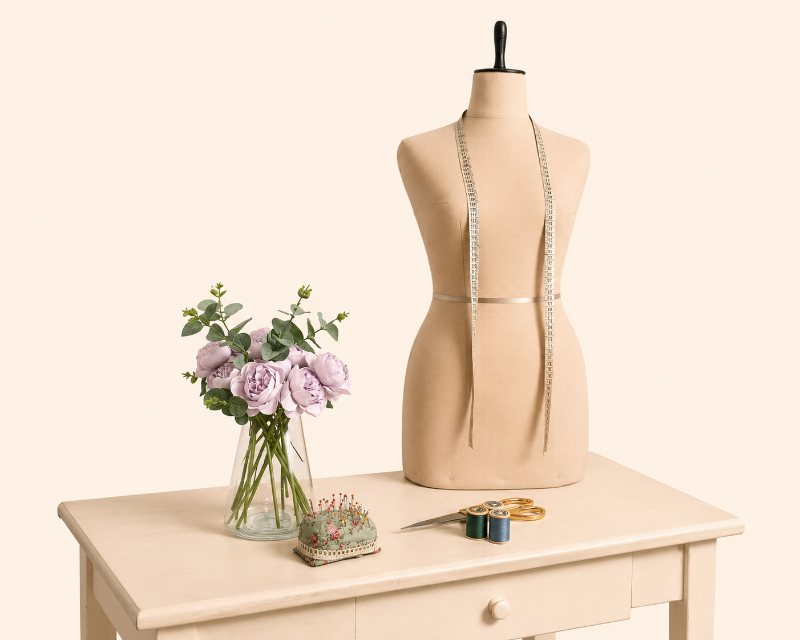

404
Página no encontrada

Parece que la página que buscas no existe. Pero no te preocupes, te ayudaremos a encontrar lo que buscas.

Página no encontrada
Parece que la página que buscas no existe. Pero no te preocupes, te ayudaremos a encontrar lo que buscas.